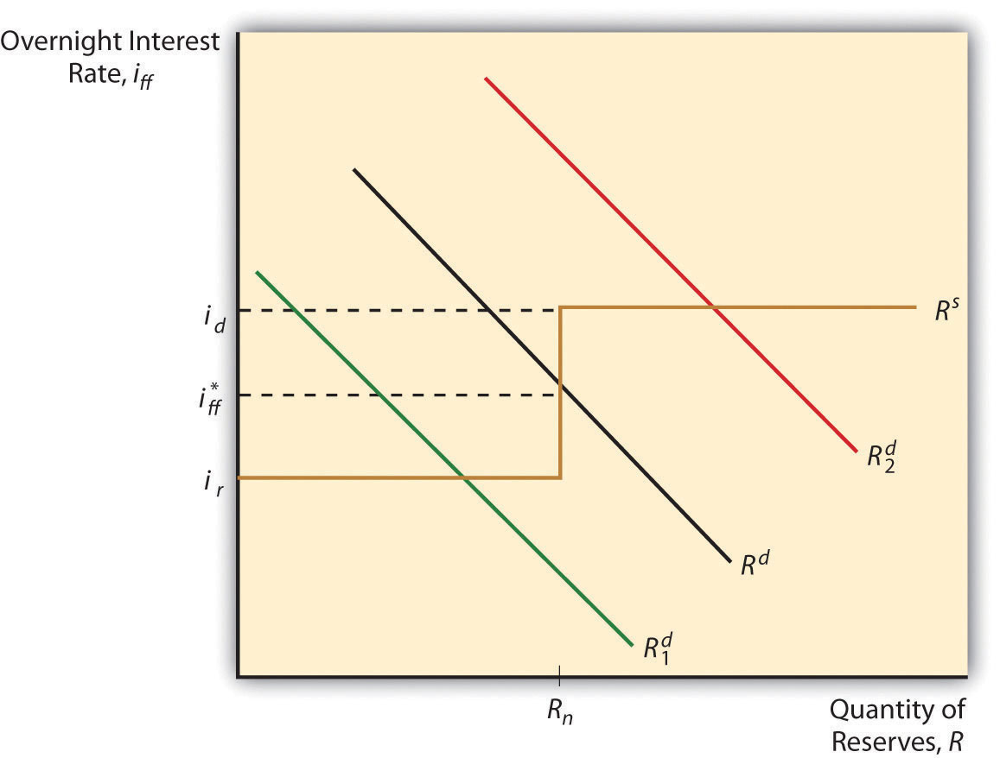
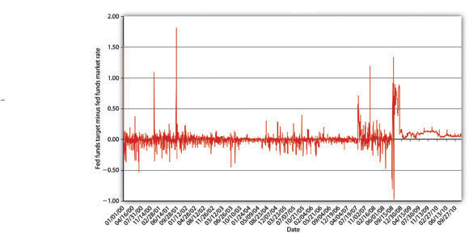
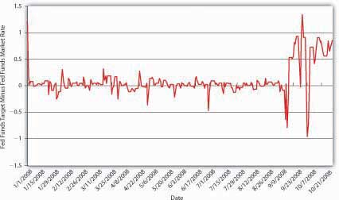

Central banks have three primary tools for influencing the money supply: the reserve requirement, discount loans, and open market operations. The first works through the money multiplier, constraining multiple deposit expansion the larger it becomes. Central banks today rarely use it because most banks work around reserve requirements. (That is not to say that reserve requirements are not enforced, merely that they are not adjusted to influence MS. Currently, the reserve requirement is 10 percent on transaction account deposits [demand, ATS, NOW, and share draft] greater than $58.8 million.www.federalreserve.gov/monetarypolicy/reservereq.htm#table1) The second and third tools influence the monetary base (MB = C + R). Discount loans depend on banks (or nonbank borrowers, where applicable) first borrowing from, then repaying loans to, the central bank, which therefore does not have precise control over MB. Open market operations (OMO) are generally preferred as a policy tool because the central bank can easily expand or contract MB to a precise level. Using OMO, central banks can also reverse mistakes quickly.
In the United States, under typical conditions, the Fed conducts monetary policy primarily through the federal funds (fed funds) market, an overnight market where banks that need reserves can borrow them from banks that hold reserves they don’t need. Banks can also borrow their reserves directly from the Fed, but, except during crises, most prefer not to because the Fed’s discount rate is generally higher than the federal funds rate. Also, borrowing too much, too often from the Fed can induce increased regulatory scrutiny. So usually banks get their overnight funds from the fed funds market, which, as Figure 16.1 "Equilibrium in the fed funds market" shows, pretty much works like any other market.
Figure 16.1 Equilibrium in the fed funds market
The downward slope of the demand curve for reserves is easily explained. Like anything else, as the price of reserves (in this case, the interest rate paid for them) increases, the quantity demanded decreases. As reserves get cheaper, banks will want more of them because the opportunity cost of that added protection, of that added liquidity, is lower. But what is the deal with that weird S-looking reserve supply curve? Note that the curve takes a hard right (becomes infinitely elastic) at the discount rate. That’s because, if the federal funds rate ever exceeded the discount rate, banks’ thirst for Fed discount loans would be unquenchable because a clear arbitrage opportunity would exist: borrow at the discount rate and relend at the higher market rate. Below that point, the reserve supply curve is vertical (perfectly inelastic) down to the rate at which the Fed pays interest on reserves (it currently pays .25% on both required and excess reserves, a practice begun in October 2008).www.federalreserve.gov/monetarypolicy/reqresbalances.htm Banks are, of course, unwilling to lend in the federal funds market at a rate below what the Fed will pay it, so the curve again becomes flat (infinitely elastic).
The intersection of the supply and demand curves is the equilibrium or market rate, the actual federal funds rate, ff*. When the Fed makes open market purchases, the supply of reserves shifts right, lowering ff* (ceteris paribus). When it sells, it moves the reserve supply curve left, increasing ff*, all else constant. In most circumstances, the discount and reserve rates effectively channel the market federal funds rate into a range.
Figure 16.2 Fed funds targeting, 2000–2010
Figure 16.3 Fed funds targeting, 2008
Theoretically, the Fed could also directly affect the demand for reserves by changing the reserve requirement. If it increased (decreased) rr, demand for reserves would shift up (down), increasing (decreasing) ff*. As noted above, however, banks these days can so easily sidestep required reserves that the Fed’s ability to influence the demand for reserves is extremely limited. Demand for reserves (excess reserves that is) can also shift right or left due to bank liquidity management activities, increasing (decreasing) as expectations of net deposit outflows increase (decrease). The Fed tries to anticipate such shifts and generally has done a good job of counteracting changes in excess reserves through OMO. Going into holidays, for example, banks often hold a little extra vault cash (a form of reserves). Knowing this, the Fed counteracts the rightward shift in demand (which would increase ff*) by shifting the reserve supply curve to the right by buying bonds (thereby decreasing ff* by an offsetting amount). Although there have been days when ff* differed from the target by several percentage points (several hundred basis points), between 1982 and 2007, the fed funds target was, on average, only .0340 of a percent lower than ff*. Between 2000 and the subprime mortgage uproar in the summer of 2007, the Fed did an even better job of moving ff* to its target, as Figure 16.2 "Fed funds targeting, 2000–2010" shows. During the crises of 2007 and 2008, however, the Fed often missed its target by a long way, as shown in Figure 16.3 "Fed funds targeting, 2008". So in December 2008, it stopped publishing a feds fund target and instead began to publish the upper limit it was willing to tolerate.
America’s first central banks, the BUS and SBUS, controlled commercial bank reserve levels by varying the speed and intensity by which it redeemed convertible bank liabilities (notes and deposits) for reserves (gold and silver). Can you model that system?
Kudos if you can! I’d plot quantity of reserves along the horizontal axis and interest rate along the vertical axis. The reserve supply curve was probably highly but not perfectly inelastic and the reserve demand curve sloped downward, of course. When the BUS or SBUS wanted to tighten monetary policy, it would return commercial bank monetary liabilities in a great rush, pushing the reserve demand curve to the right, thereby raising the interest rate. When it wanted to soften, it would dawdle before redeeming notes for gold and so forth, allowing the demand for reserves to move left, thereby decreasing the interest rate.